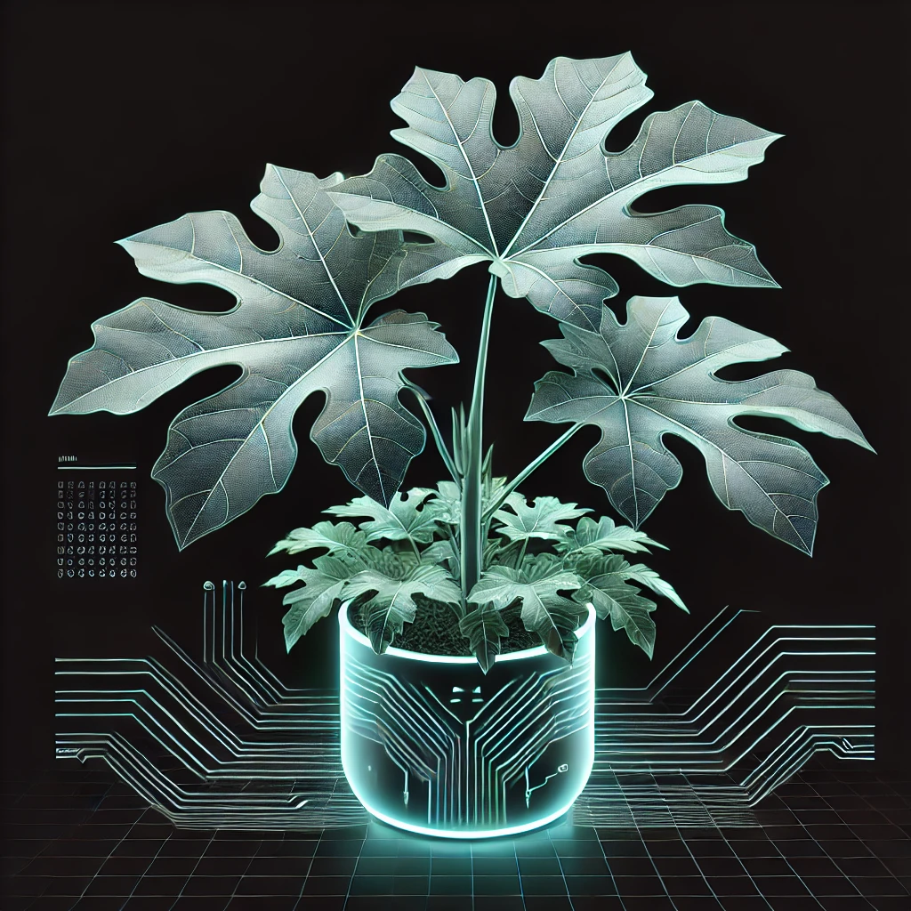
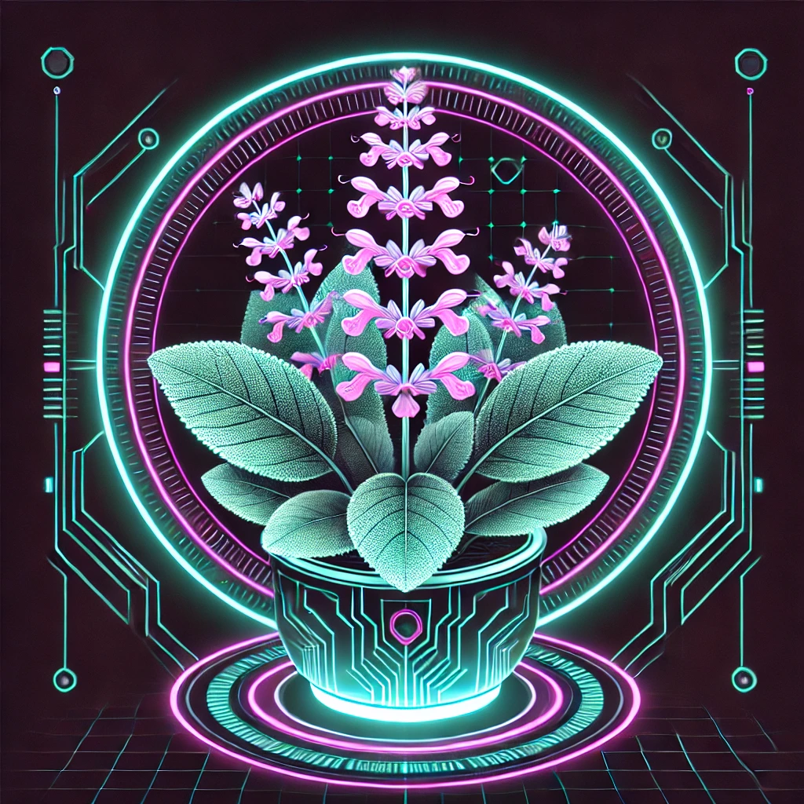
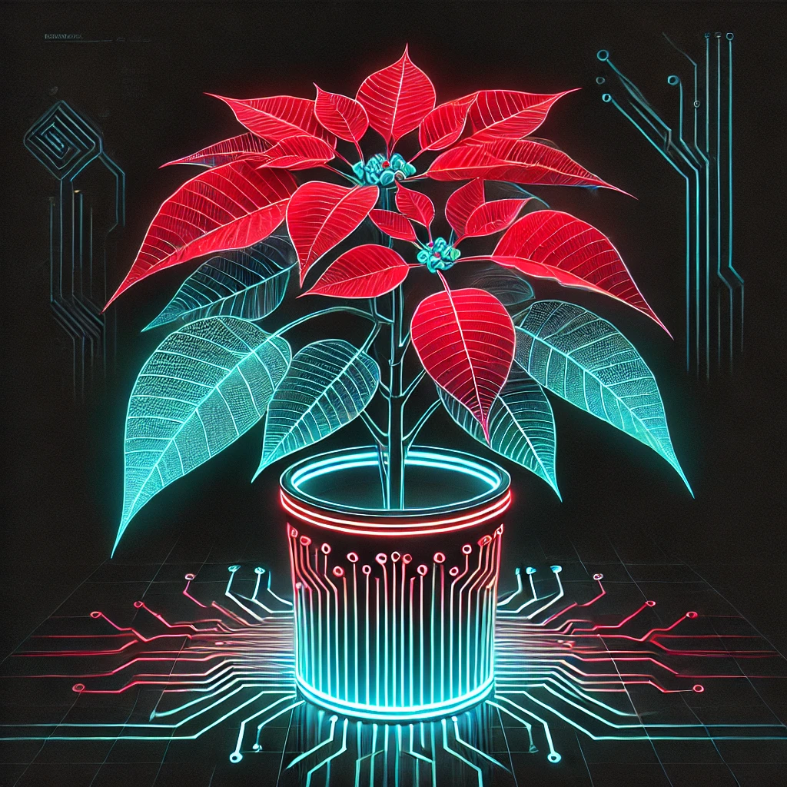
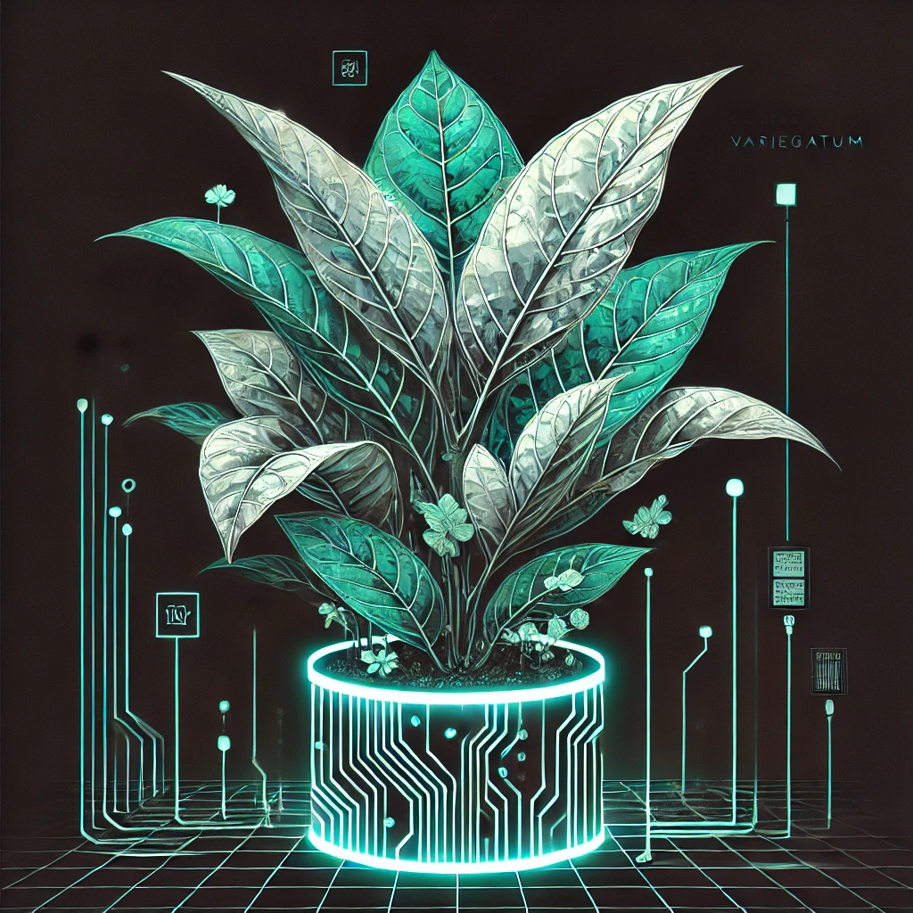

AR × CULTURAL HERITAGE × SUSTAINABILITY
花非花？
讓地方文化，
在科技裡重新被看見。
以臺中沙鹿晉江寮為場域，結合擴增實境、遊戲化互動、3D 植物與 AI NPC， 將在地文化、生態教育與數位體驗重新連結。
Local RevitalizationARGamificationAI NPC
JINJIANGLIAOAR GARDEN
植物任務徽章
10植物
4任務點
AINPC
SCROLL TO EXPLORE ↓
01 WHY THIS PROJECT
當地方記憶逐漸淡去，
科技能不能成為新的入口？
晉江寮擁有自然與人文資源，但地方文化記憶與生態特色容易在都市發展中被忽略。 《花非花？》不是只做一個 AR App，而是希望透過互動設計，讓使用者主動走進社區、 探索故事，重新建立對地方的理解與連結。
文化保存
把地方歷史、地景與故事轉化為可被探索的數位內容。
生態教育
透過植物展示、AR 與遊戲任務，降低學習門檻。
地方創生
讓使用者不只經過場域，而是以任務與互動理解地方特色。
02 EXPERIENCE FLOW
把地方探索，
變成一場任務。
掃描任務點 → 接收挑戰 → 完成闖關 → 獲得徽章與知識
SCANNING
✦
03 REAL APP SCREENS
從概念，
真正做到手機裡。
以下畫面來自原始專題簡報中的實際 App 與開發成果。
LOADING...
01 / MAIN MENU
數碼花園主選單
將任務、數碼花園、展覽館與植物相關功能集中於探索入口。
LOADING...
02 / 3D + AI NPC
植物自訂 × 晉江小精靈
結合 3D 內容與 AI NPC，讓資訊不只被閱讀，而能被對話探索。
LOADING...
03 / MINI GAMES
跳格子 × 拼圖
不同任務點搭配不同操作機制，讓文化學習透過行動留下記憶。
LOADING...
04 / AR PLANTS
AR 植物資訊展示
透過 AR 顯示植物模型與資訊，將現地探索延伸成數位生態學習。
04 DIGITAL HERBARIUM
10 種植物，
成為地方生態的數位入口。
植物名稱依你提供的原始專題素材整理；網站不額外添加未經原資料支持的植物知識。
.webp) 01
01互葉白千層
Melaleuca alternifolia
02木瓜
PROJECT PLANT左手香
PROJECT PLANT杭菊
PROJECT PLANT
05粉尊鼠尾草
PROJECT PLANT.webp) 06
06斑艾
Crossostephium chinense黑板樹
PROJECT PLANT
08聖誕紅
PROJECT PLANT
09變葉木
PROJECT PLANT.webp) 10
10鱗蓋鳳尾蕨
Pteris vittataAI NPC / JINJIANG SPIRIT
把知識藏進對話，
而不是塞進說明頁。
原專題透過 AI NPC「晉江小精靈」讓玩家理解晉江寮歷史、文化與生態。網站版提供互動式對話示範，不放置任何 API 金鑰。
和小精靈對話 →05 TECHNOLOGY
從 3D 建模，
到 AR 與 AI 對話。
06 USER TESTING
不只做出來，
也真的讓使用者玩。
清水測試
88%+
簡報記錄：56 位不同年齡層測試者中，超過 88% 認為遊戲設計新穎且有趣，並能激發對地方的好奇心。
互動方式具吸引力
原報告指出玩家普遍認為操作簡單直觀，互動過程具有趣味性。
圖像辨識準確度
部分玩家在掃描指定圖像啟動任務時遇到辨識不準確，是後續優化重點。
更多故事與場域
未來規劃增加居民深度訪談、生態問答與更多互動內容，並延伸至其他文化場域。
07 MY ROLE
郭蘊苓｜跨互動、AI、
視覺與內容製作。
在這個專題裡，我參與的不只是單一功能，而是從前期企劃、互動關卡、3D 與 UI，到 AI 串接、影音與最終展示，負責把不同環節整合成完整體驗。
Interaction Design
進度規劃、關卡發想、功能發想、故事腳本
AI Integration
ChatGPT API 與 AI NPC 互動內容
Visual & UI
UI 視覺、徽章模型、簡報與整體呈現
3D & Game Content
植物模型、NPC 模型與遊戲內容製作
Media Production
音樂音效、影片拍攝與剪輯、報告製作
SOCIAL IMPACT
科技不是終點，
地方連結才是。
《花非花？》希望建立一個可被延伸的數位文化保存方式：透過 AR、遊戲與 AI，讓文化不只被展示，而是被使用者主動探索與參與。
SDG 4｜優質教育SDG 11｜永續城市與社區
TRY THE EXPERIENCE
不是只看作品，
直接進去玩。
PROJECT TEAM
Flower or Not?
林思岑 · 郭蘊苓 · 張書郡 · 張書亞 · 紀翊陞
指導教師｜王肇